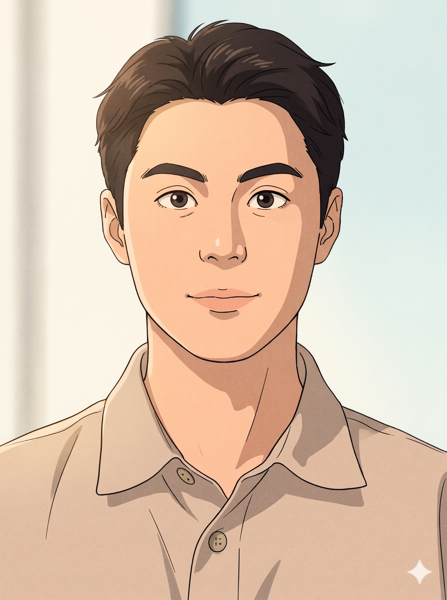

오리가미(Origami) 접힘 기구학과 초박형 경량 소재를 결합하여
지상·수상·공중을 넘나드는 다중 환경 변형 로봇을 연구합니다.
평면 시트(Sheet) 형태의 유연한 구조가 접힘 패턴에 따라 입체적으로 변형되는 오리가미 공학에 깊은 관심을 가지고 있습니다. 단일 구동 메커니즘의 한계를 넘어 환경 변화에 맞춰 형태를 전환(Morphing)하는 하드웨어 설계와 임베디드 제어 알고리즘을 탐구합니다.
기존의 소형 탐사 로봇은 바퀴·프로펠러·날개 등 단일 환경에만 최적화된 구조를 가져 지상, 수상, 공중이 복합된 재난 현장이나 좁은 틈새를 동시에 돌파하는 데 한계가 있습니다. 오리가미 접힘 메커니즘과 초박형 유연 기판을 결합해 휴대 시에는 얇은 시트 형태를 유지하고, 투입 환경에 따라 스스로 형태를 변형하여 육·해·공 모두 이동할 수 있는 로봇 플랫폼을 구상했습니다.
별도의 부품 교체 없이 실시간 형태 변형만으로 평지 주행, 수면 이동, 공중 활공이 모두 가능한 초박형 다중 환경 로봇 프로토타입을 구축하고 모드 전환 효율을 검증할 예정입니다.